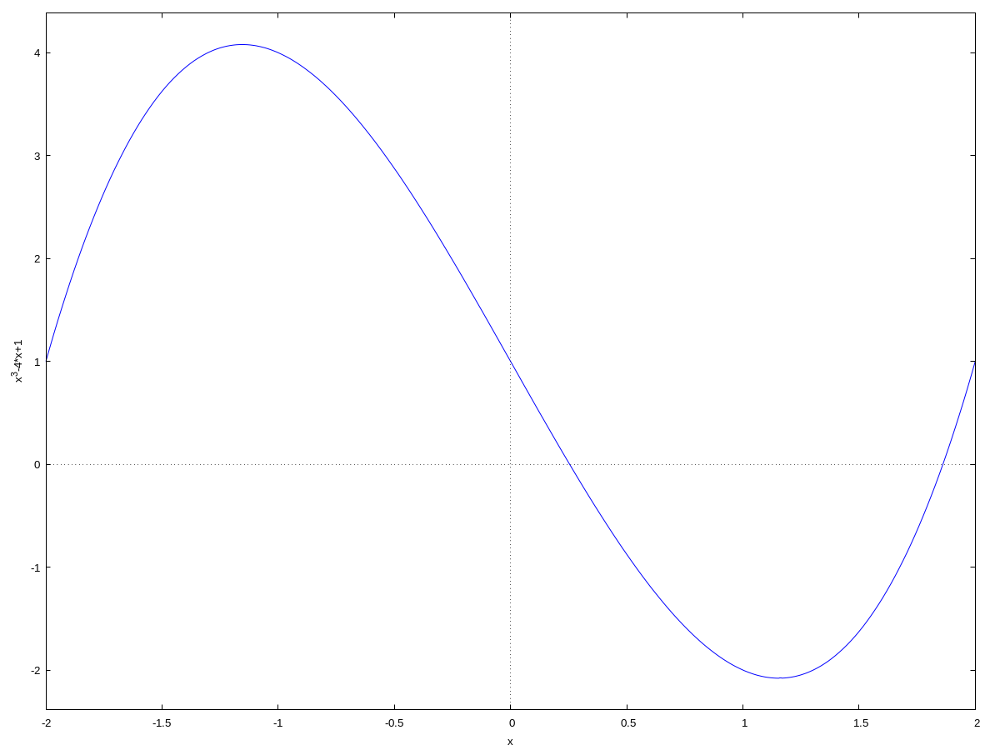

Calculus and Support Functions#
Solving Equations#
Exact Solutions#
To find exact solutions to an equation you can use the solve command. The first argument is an equation and the second is the variable to solve for. For example, to solve the equation \(x^2-3x+4 = 2\) we can use,
solve(x^2-3*x+4 = 2,x)
the solutions would be 1 and 2. We can also input an expression instead of an equation if we are solving for 0. For example, to solve the equation \(x^2-3x+4 = 0\) we can use,
solve(x^2-3*x+4,x)
and we would get,
Approximate Solutions#
To find approximate real solutions to a function we can use the find_root command. The find_root command takes the function or expression in a single variable, and two values that are on either side of the root. For example, say we want the roots of \(f(x) = x^3-4x+1\). First define the function,
f(x):=x^3-4*x+1
Plot the function to get an idea where the real roots are,
wxplot2d(f(x),[x,-2,2])

\(y=x^3-4x+1\)#
There seems to be one between 0 and 1 and another between 1 and 2. There is another but we will just do these two. The command,
find_root(f(x),0,1);
will return the root, 0.2541016883650524, and the command,
find_root(f(x),1,2);
will return the root, 1.860805853111703.
Equations#
In Maxima an equation is an expression with an = sign in it. From the above example the expression x^2-3*x+4 = 2 is an equation. Often the results of the solve command will be a list of equations. In many cases you will want to extract an expression from an equation, you can do so with the rhs and lhs functions. For example, in the above example we ran the command,
s:solve(x^2-3*x+4,x)
This returned,
If we want the first solution we can extract the first entry by,
s1:s[1]
This will return the equation,
Then we can extract the value with,
v:rhs(s1)
and v will have the value,
We could have done this is one step with
v:rhs(s[1])
Simplifying Expressions#
Maxima has numerous simplification functions that you can invoke through the Simplify submenu of the main menu in wxMaxima, so we will not discuss each of the commands. The most common is ratsimp for rational expression simplification. For example,
a:1/(x-1)+ (x+1)/(x^2+1)
defines a as \(\frac{x+1}{{{x}^{2}}+1}+\frac{1}{x-1}\). Then
ratsimp(a)
returns \(\frac{2 {{x}^{2}}}{{{x}^{3}}-{{x}^{2}}+x-1}\).
Rational Expressions#
From time to time you may need to extract the numerator or denominator of a rational expression, the commands num and denom do just that. For example,
f:(sin(x)*cos(x^2))/(x^4-tan(3/x));
num(f);
denom(f);
df:diff(f,x);
dfs:ratsimp(df);
num(dfs);
denom(dfs);
(%i26) f:(sin(x)*cos(x^2))/(x^4-tan(3/x));
num(f);
denom(f);
df:diff(f,x);
dfs:ratsimp(df);
num(dfs);
denom(dfs);
(%o20) (sin(x)*cos(x^2))/(x^4-tan(3/x))
(%o21) sin(x)*cos(x^2)
(%o22) x^4-tan(3/x)
(%o23) -(2*x*sin(x)*sin(x^2))/(x^4-tan(3/x))-((4*x^3+(3*sec(3/x)^2)/x^2)*sin(x)*cos(x^2))/(x^4-tan(3/x))^2+(cos(x)*cos(x^2))/(x^4-tan(3/x))
(%o24) -((2*x^7-2*tan(3/x)*x^3)*sin(x)*sin(x^2)+((4*x^5+3*sec(3/x)^2)*sin(x)+(tan(3/x)*x^2-x^6)*cos(x))*cos(x^2))/(x^10-2*tan(3/x)*x^6+tan(3/x)^2*x^2)
(%o25) -(2*x^7-2*tan(3/x)*x^3)*sin(x)*sin(x^2)-((4*x^5+3*sec(3/x)^2)*sin(x)+(tan(3/x)*x^2-x^6)*cos(x))*cos(x^2)
(%o26) x^10-2*tan(3/x)*x^6+tan(3/x)^2*x^2
Complex Numbers#
In Maxima the imaginary unit is %i, so z:3+4*%i will define z as \(3+4i\). We can extract the real and imaginary parts of a complex number with realpart and imagpart. For example,
z:3+4*%i;
realpart(z);
imagpart(z)
We can also take the complex conjugate with,
z:3+4*%i;
conjugate(z);
and the modulus, absolute value, with,
z:3+4*%i;
abs(z);
Limits#
Maxima’s limit function takes two forms, a two-sided limit the a one-sided limit.
For a two-sided limit you give it the function or expression to take the limit of, the variable, and the limit point. For example,
f(x):=sin(x)/x;
limit(f(x), x, 0)
will find,
For a one-sided limit you give it the function or expression to take the limit of, the variable, the limit point, and the direction, minus to approach from the left and plus to approach from the right. For example,
f(x):=sin(x)/x;
limit(f(x), x, 0, minus)
will find,
and
f(x):=sin(x)/x;
limit(f(x), x, 0, plus)
will find,
Note
For infinite limits use inf for \(\infty\) and -inf or minf for \(-\infty\).
Derivatives#
To find a derivative or partial derivative use the diff command. The diff command takes the function or expression, the variable to differentiate with respect to and an optional order of the derivative. There are several options here for input se we will do several examples.
Say we have the function,
f(x):=x*sin(x)
then we can take its derivative with respect to x by
diff(f(x),x)
which will return \(\sin{(x)}+x \cos{(x)}\).
We can do higher-order derivatives by adding an order at the end of the command, so the second derivative would be,
diff(f(x),x, 2)
which will return \(2 \cos{(x)}-x \sin{(x)}\). The third derivative would be
diff(f(x),x, 3)
which will return \(-3 \sin{(x)}-x \cos{(x)}\).
If you have a function of several variables then the diff command returns the partial derivative. For example, if we have the function,
f(x, y):=sin(x*y)+y^4-3*x^2
then the following command will find the partial derivative with respect to x
diff(f(x, y),x)
and the following command will find the partial derivative with respect to y
diff(f(x, y),y)
You can also do mixed partials in a single command, the following will take the partial with respect to x and then the partial with respect to y,
diff(f(x, y),x,1,y,1)
and the following will take the third partial with respect to x and then the second partial with respect to y,
diff(f(x, y),x,3,y,2)
Implicit Differentiation#
The procedure for implicit differentiation is a little different. We keep the implicit relationship as an equation, but we need to tell Maxima that y is a function of x with the notation, y(x), and then we can use the diff command, followed by solving for the derivative. For example, we will implicitly differentiate the following.
Input the expression using y(x) for y,
kill(all);
f:x*cos(y(x)) = -y(x)*sin(x) + 1/2
Now take the derivative,
dy:diff(f, x)
You should get the following,
Maxima took the derivative implicitly but did not solve for \(y'\). The following command will solve for \(y'\),
solve(dy,diff(y(x),x))
The result should be,
which, of course, translates to
Integrals#
Area Approximations#
Maxima does not have a built-in function for Riemann sums nor the Trapezoidal Rule or Simpson’s Rule, but it does have a sum command that we can use to get the job done. If you wish to use these simply copy and paste the code into the wxMaxima workspace and then hit Shift-Enter to load the definition into memory. All of these functions have the same syntax, left_sum(RSfct,lb,ub,n), RSfct is the function to be used in the approximation, this must be defined as a function of a single variable, for example f(x):=x^2+3. The lb is the lower bound of the interval, ub is the upper bound of the interval, and n is the number of rectangles.
The left-hand endpoint approximation function.
left_sum(RSfct,lb,ub,n):=block([dx,s,a],local(RSfct,lb,ub,n,dx,s,a),
dx:(ub-lb)/n,
s:sum(RSfct(lb+(i-1)*dx)*dx,i,1,n),
a:float(s), numer,
a)$
The right-hand endpoint approximation function.
right_sum(RSfct,lb,ub,n):=block([dx,s,a],local(RSfct,lb,ub,n,dx,s,a),
dx:(ub-lb)/n,
s:sum(RSfct(lb+i*dx)*dx,i,1,n),
a:float(s), numer,
a)$
The midpoint approximation function.
mid_sum(RSfct,lb,ub,n):=block([dx,s,xp,a],local(RSfct,lb,ub,n,dx,s,xp,a),
dx:(ub-lb)/n,
xp:lb+i*dx - dx/2,
s:sum(RSfct(xp),i,1,n),
a:float(s*dx), numer,
a)$
The Trapezoidal Rule approximation function.
trap_sum(RSfct,lb,ub,n):=block([dx,s,xp,nxp,a],local(RSfct,lb,ub,n,dx,s,xp,nxp,a),
dx:(ub-lb)/n,
xp:lb+(i-1)*dx,
nxp:lb+i*dx,
s:sum(RSfct(xp)+RSfct(nxp),i,1,n),
a:float(s/2*dx), numer,
a)$
Simpson’s Rule approximation function.
simp_sum(RSfct,lb,ub,n):=block([dx,s,xp0,xp1,xp2,a],local(RSfct,lb,ub,n,dx,s,xp0,xp1,xp2,a),
dx:(ub-lb)/n,
xp0:lb+2*i*dx,
xp1:lb+(2*i+1)*dx,
xp2:lb+(2*i+2)*dx,
s:sum((RSfct(xp0)+4*RSfct(xp1)+RSfct(xp2)),i,0,n/2-1),
a:float(s/3*dx), numer,
a)$
For example, input the mid_sum code then input,
f(x):=x^3 - 3*x^2 + 2*x + 3;
mid_sum(f, 0, 3, 100);
The result is, 11.2496625. Doing the same thing with Simpson’s Rule gives, 11.25.
Definite and Indefinite Integrals#
Exact definite and indefinite integrals can be calculated with the integrate command. The integrate command comes in two forms,
integrate(f, var),fis the function or expression to be integrated andvaris the variable to integrate with respect to.integrate(f, var, lb, ub),fis the function or expression to be integrated andvaris the variable to integrate with respect to,lbis the lower bound for the interval, andubis the upper bound for the interval.
For example,
f(x):=x^3 - 3*x^2 + 2*x + 3;
integrate(f(x), x, 0, 3);
returns \(\frac{45}{4} = 11.25\), and
f(x):=sin(x)^6*cos(x)^4;
integrate(f(x), x);
returns
which simplifies to
Approximate Integration#
Maxima also has several definite integral approximation functions, the two we will look at are quad_qags and romberg. We will not get into how these are implemented, just how they are used. The syntax of these are similar to the integrate command, function, variable, lower bound, and upper bound.
quad_qags(f(x), x, 1, 4);
will return
The first number in the list is the approximation, and the second is the error bound for the approximation. Don’t worry about the last two values, these deal with the method itself.
romberg(f(x), x, 1, 4);
will return 147.0, just the approximation.
Ordinary Differential Equations#
To find exact solutions to ordinary differential equations use the ode2. The syntax is ode2(DifEq, Ind, Dep); where DifEq is the differential equation, Ind is the independent variable, and Dep is the dependent variable. For example,
de:3*x + x*y - 'diff(y, x);
sl:ode2(de, y, x);
Power Series and Taylor Series#
Maxima can create a finite portion of a power series and of a Taylor series (a Taylor polynomial). For power series simply use the sum command and for Taylor polynomials use the taylor command.
sum(fct(n),n,start n,end n)wherefct(n)is the expression for the nth term. For example,sum(x^n,n,0,10)produces \(x^{10} + x^{9} + x^{8} + x^{7} + x^{6} + x^{5} + x^{4} + x^{3} + x^{2} + x + 1.\)taylor(f(x), point, degree)wheref(x)is the function, point is the expansion (center) point, and degree is the degree (or order) of the polynomial.